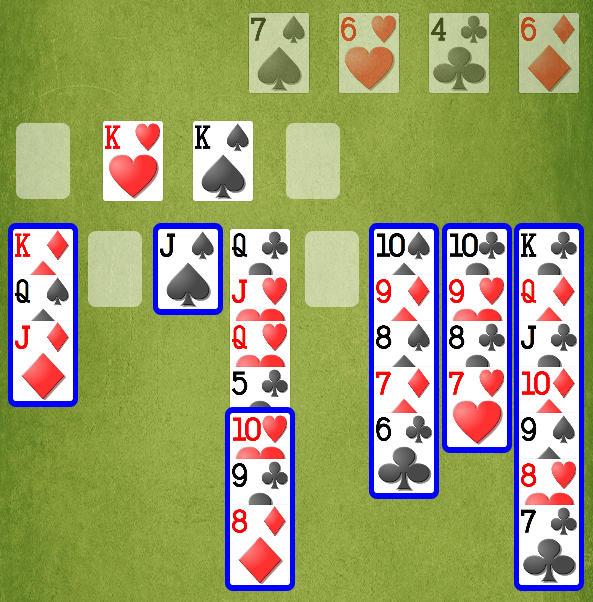
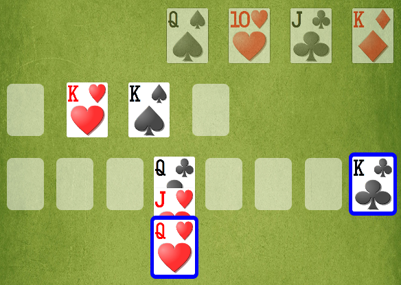
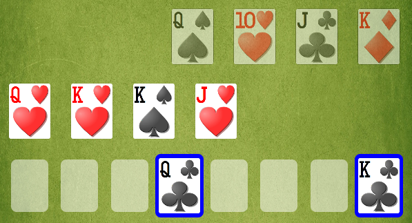

If Automove to Foundations is on, then after every move of yours, TapTapFreeCell will attempt to perform a safe Automove-to-Foundations, automatically.
Even if Automove to Foundations is off, you can ask for a safe Automove-to-Foundations at any time by double-tapping on the background.
If Early Endgame is on, then after every Automove-to-Foundations, TapTapFreeCell will attempt to distribute the remaining cards into empty Freecells and Columns in such a way that another round of Automove-to-Foundations will win the game.
Here’s a case in point:

We move the red 10-9-8 from Column 4 onto the black Jack in Column 3. At that moment, the 5 of Clubs is exposed, Automove-to-Foundations is performed, and a lot of cards go flying up to the Foundations, leaving us in this situation:

At this point, Automove-to-Foundations can go no further, because the Queen of Hearts is covering the Jack of Hearts. But if Early Endgame is on, TapTapFreeCell will now deal the Queen of Hearts and the Jack of Hearts into the empty Freecells, like this:

TapTapFreeCell then performs another round of Automove-to-Foundations, and this time the game ends.